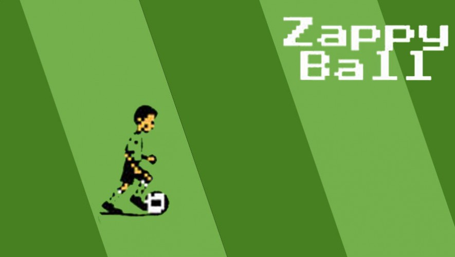

Zappy Ball
Un juego hecho por José de León, es perfecto para todos los fanáticos de fútbol.
Perfecto para todos los fanáticos de fútbol.
Debes esquivar a los jugadores y lograr anotar para obtener
la mayor cantidad de puntos posible.
Puedes descargarla únicamente en los sistemas iOS.
